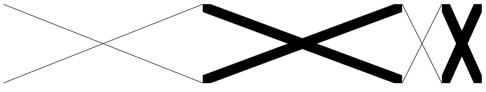
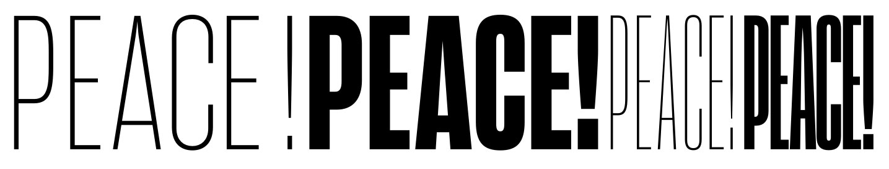

When you export from RoboFont you will see a folder with 4 .svg files and 1 .json file. If you create these files with another tool or script, these are the files you need to make. The .json file contains a couple of names and some proportions:
This document explains the ideas in the Responsive Lettering package. Version 1, November 2015. In this package there are two main components:
There are many tools that can create SVG files. In order to be able to interpolate them though, we need to prepare the files with some care. The code that will render the shapes in the page needs to be fast, so it can't do too much clever thinking about the shapes. It expects each SVG master to have the same number of points and the same number of instructions. The problem we've seen is that SVG is optimised, so if a line is horizontal, the y value is ignored. This is fine for drawing, but tricky for math. What if one of the masters has a diagonal line but the other just has a horizontal. One file would be a number short, the number of coordinates would not match. This is what happens if you draw the masters in Illustrator: each SVG will be completely valid, but structurally too different from the others to be able to do any math with them.
By using the included RoboFontExtension you can draw the different masters as separate glyphs and then export them the right way. The extension also offers a small preview window that can be resized. You can also use the extension to create a new template UFO that has the right glyphnames and sizes. Your drawings do not need to fit these default sizes, but you must make sure both narrows and both wides are the same. The extension will tell you something is wrong when exporting.
When you export from RoboFont you will see a folder with 4 .svg files and 1 .json file. If you create these files with another tool or script, these are the files you need to make. The .json file contains a couple of names and some proportions:
{ "files": ["demo_ms/narrow-thin.svg",
"demo_ms/wide-thin.svg",
"demo_ms/narrow-bold.svg",
"demo_ms/wide-bold.svg"],
"extrapolatemin": 0,
"designspace": "twobytwo",
"sizebounds": [[500, 1000], [2500, 1000]],
"extrapolatemax": 1.25
}

These are the shapes that are added to the template by the extension.

Here each word is a single glyph. You see the wides are not as wide as the template. It really depends on the shapes you're trying to make.
All four masters must share the same point structure (currently, for the two-by-two designspace). You can use overlaps though! By making the width differential bigger you can make the shape respond to a wider range of rectangles. It helps to have an idea of how the shape will be used in the page.
Put the folder with all the SVGs and json in a place where your webserver can find them. Look at the code of the example implementation.. The mathShape object finds the dimensions of the parent element so it knows the proportions of the required drawing. Then it can calculate the (single!) interpolation factor for the width axis. This produces two new masters which can be interpolated with the secondary interpolation factor. A couple of the examples use weight variations and indeed, the glyph names in the template fonts use weight terminology. But this axis can be anything you want. The resulting SVG image then has exactly the right height / width proportions. It will scale perfectly to fit inside the parent element.